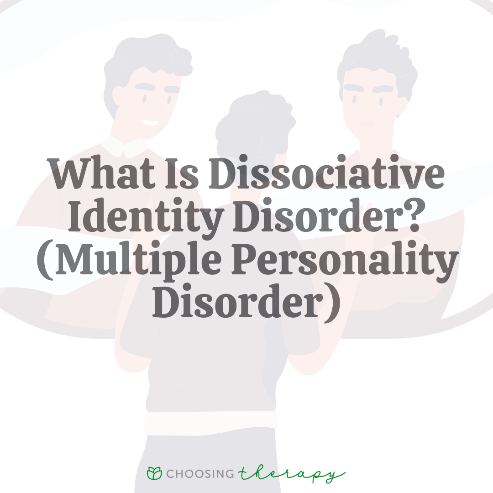
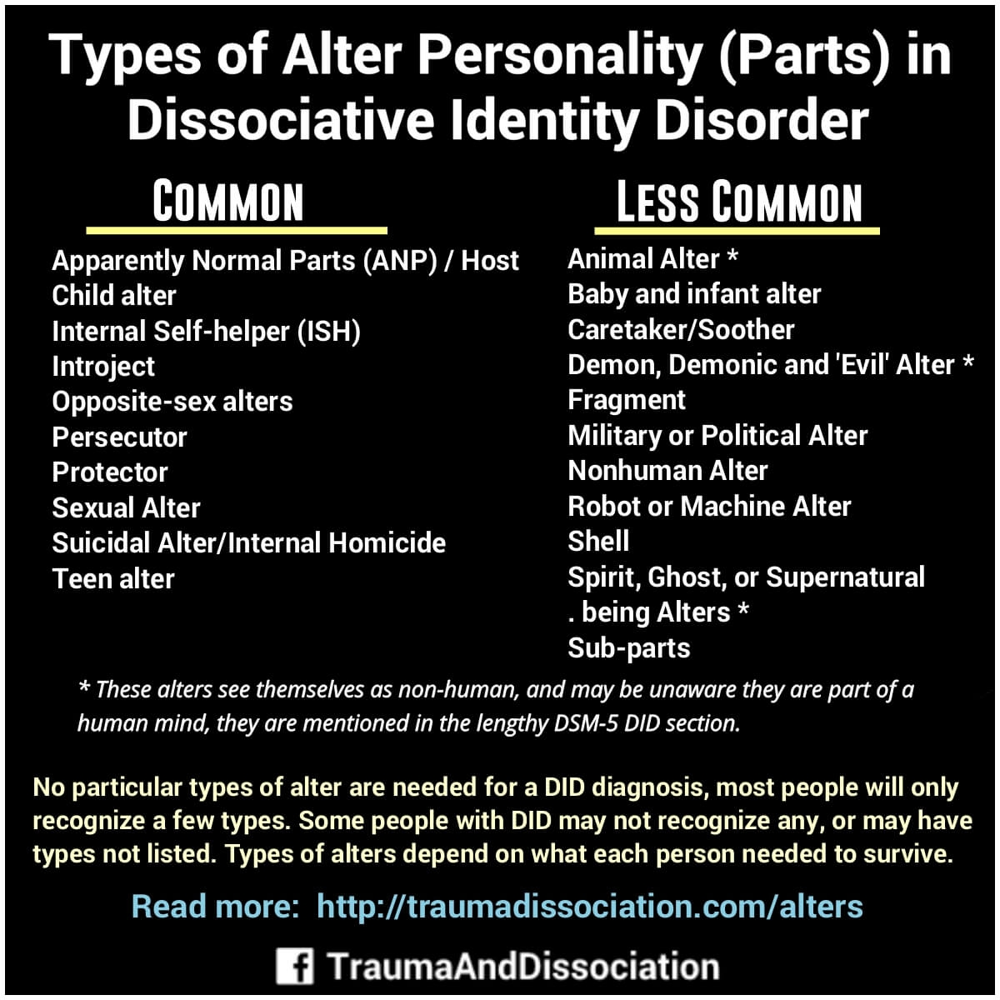

DID-Research
A page dedicated to researching DID, its comorbidities, its causes, and more!
Learn More

Alter Roles
An excellent resource for learning basic alters roles and what they do, alongside other useful information about alters.
Learn More